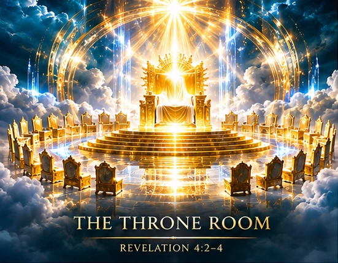

Sunday Worship
Time to be announced
A legacy of faith. A future of purpose.
Welcome to Open Door Church, where Jesus Christ is our foundation, God’s Word is our standard, and we walk by faith. We are committed to equipping believers spiritually and naturally to walk in the victory of Jesus Christ and fulfill God’s purpose for their lives.
Join us in worship
We look forward to worshiping with you.
Time to be announced
6:00 PM
Worship and fellowship
A glimpse of the people, spaces, and heritage of Open Door Church.

Gather with us
Join us for worship, fellowship, and opportunities to grow together.
Stay connected for upcoming events. You can also follow the church's official Facebook page for announcements.
Church announcements on Facebook ↗Kingdom of Heaven • Scripture-inspired


Our centennial legacy
Since November 1926, Open Door Church has stood on the foundation of God’s Word. We look forward with gratitude, faith, and purpose as we honor a century of ministry.
Explore Our History
Who we are
Through generations and changes in leadership, Open Door has remained anchored in God’s Word as the standard for life.
Our mission
Four principles shape how we pursue God’s purpose with faith, wisdom, and excellence.
See beyond present circumstances through faith, trusting in God’s power and purpose.
Ephesians 3:20, Hebrews 11:1Apply God’s Word with wisdom, creativity, and excellence, using the gifts He has given us.
Colossians 3:23, Exodus 35:31–32Put faith into action through obedience to God’s Word and faithful service.
James 1:22, James 2:17Search the Scriptures, seek God’s wisdom, and exercise spiritual discernment.
James 1:5, Acts 17:11Grounded in truth. Growing in Christ. Walking by faith. Serving with excellence.
What We BelieveOur Foundation Is Jesus Christ · 1 Corinthians 3:11
John 17:17 · KJV
“Sanctify them through thy truth: thy word is truth.”
God’s Word is the foundation of truth.
Ephesians 6:10–11 · KJV · Summary
Stand strong in the Lord and put on the whole armor of God.
Matthew 6:33 · KJV · Summary
Seek first the kingdom of God and His righteousness.